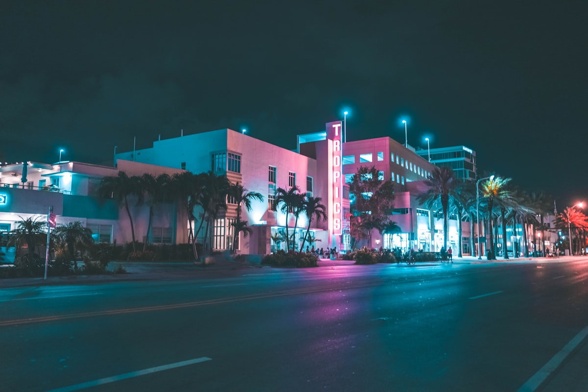
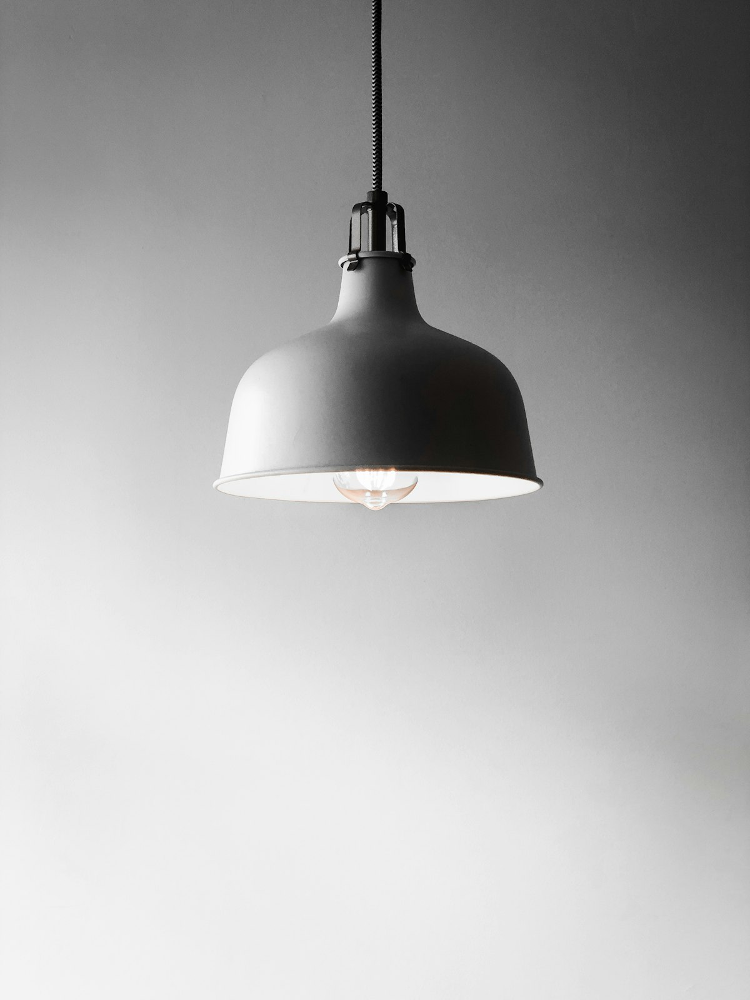

Our Services
主要事業

01
精密切削加工
CNCマシニングセンタによる高精度切削加工。複雑形状の部品製造に対応します。

02
プレス・板金加工
順送プレスによる大量生産対応。薄板から厚板まで幅広く対応可能。

03
溶接・組立
TIG・MIG溶接から組立工程まで一貫対応。品質管理も徹底しております。
切削・プレス・溶接から表面処理まで。自動車・産業機械向けの高精度金属部品を一貫製造。46年の技術力でお客様のニーズに応えます。
CNCマシニングセンタによる高精度切削加工。複雑形状の部品製造に対応します。

順送プレスによる大量生産対応。薄板から厚板まで幅広く対応可能。
TIG・MIG溶接から組立工程まで一貫対応。品質管理も徹底しております。

1978年の創業以来、金属加工の専門メーカーとして自動車・産業機械・建設設備向けの部品を製造。最新設備と熟練技術者による一貫生産体制で、高品質・短納期を実現します。
製品・加工技術・お見積りに関するご相談はこちらからお気軽にどうぞ。